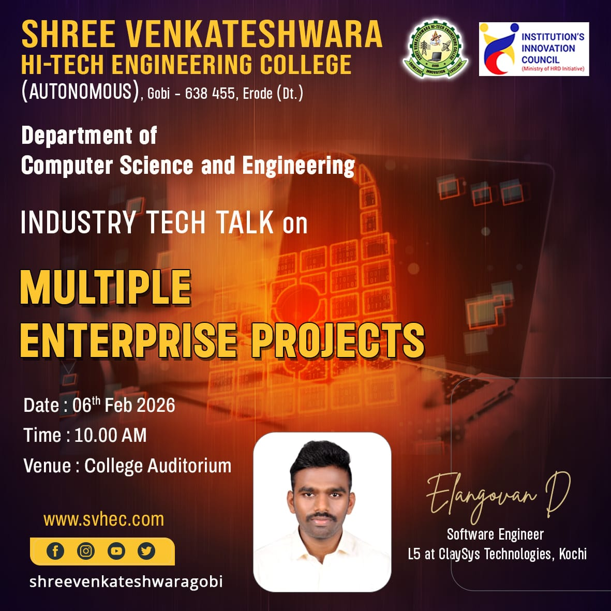
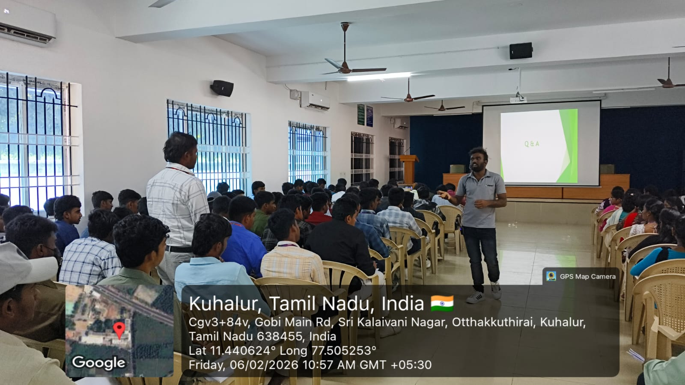
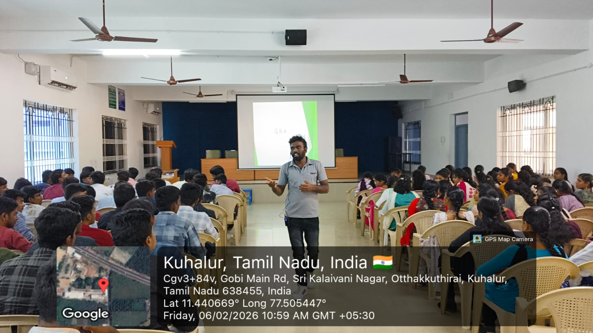
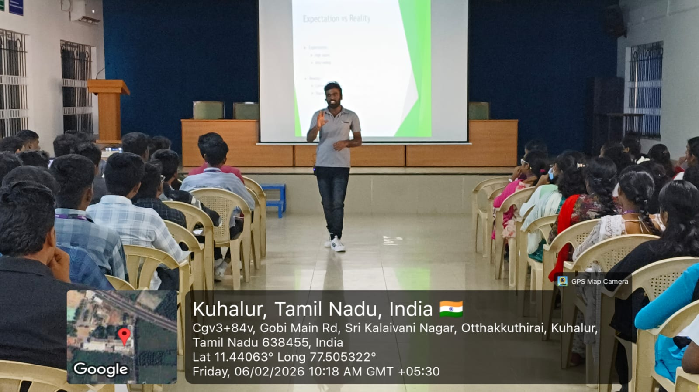
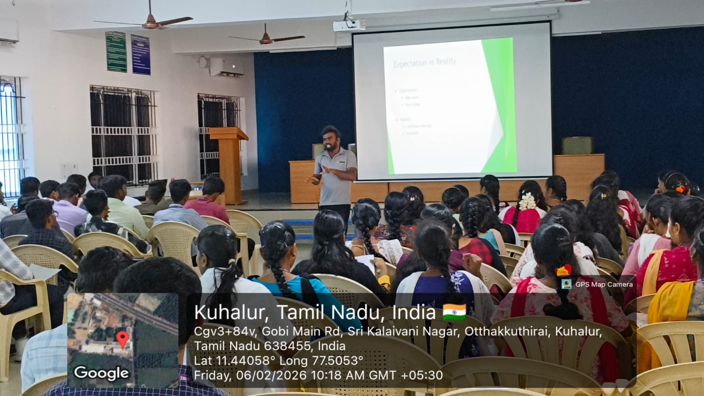
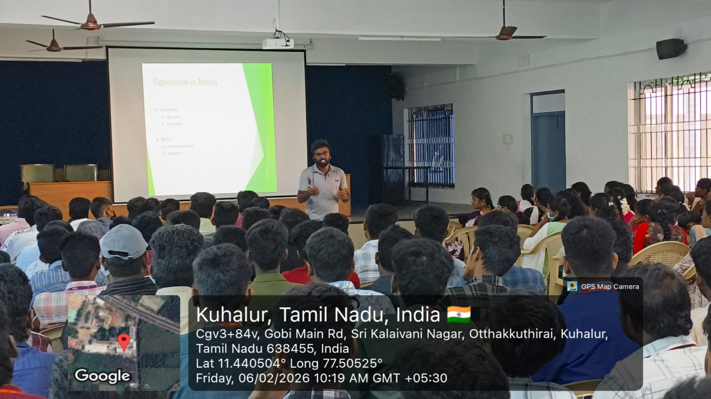

Building scalable, secure, and high-performance web applications with clean architecture, modern DevOps practices, and real-world business impact.
I am a Software Engineer with 3 years of hands-on experience in designing, developing, and deploying scalable web applications using .NET, ASP.NET Core, MVC, Web API, and Angular.
I have worked extensively on biometric verification systems, digital document signing platforms, and enterprise-level backend services with a strong focus on clean architecture, performance optimization, and security.
My experience also includes Docker-based deployments, Linux environments, and database design using SQL Server and MySQL. I enjoy solving complex problems and building reliable systems that create real business value.
Scaler
Learned containerization, orchestration, Kubernetes architecture, Linux deployment, and cloud-native DevOps practices.
Infosys Springboard
Covered CI/CD pipelines, deployment automation, Linux-based workflows, DevOps practices, and infrastructure fundamentals.
IBM
Covered fundamentals of Artificial Intelligence, Machine Learning, Agile methodologies, and software development practices.
Department of Computer Science and Engineering,
Shree Venkateshwara Hi-Tech Engineering College (Autonomous),
Gobi, Erode, Tamil Nadu
It was a great experience interacting with 100+ second and third year Computer Science students at my alma mater. The session focused on sharing real-world industry exposure and practical insights gained from working on enterprise-scale software systems.






Enterprise-grade digital document signing platform supporting multi-signer workflows, audit trails, and cryptographic PDF signing.
Biometric verification system with face and voice liveness, chunked uploads, async processing, and real-time status tracking.
Full-stack hotel booking and management system allowing users to search rooms, check availability, and manage reservations with an admin dashboard.
Voice liveness verification and transcription system designed for call-center workflows with session-based verification.
"Elango is a highly dedicated and dependable resource who consistently delivers tasks on time with great quality. He has taken strong ownership of critical POC initiatives in our team, especially in the NextlySign. His worked on the HAProxy server setup and the complex bulk download logic for NextlySign demonstrated excellent technical skills, problem-solving ability, and commitment to successful delivery."
"It was great working with Elangovan. He learns things quickly, handles multitasking across projects really well, and always makes sure deliverables are completed on time with good quality."
“I’ve really enjoyed working with Elangovan on our projects. He is very approachable and always willing to help the team whenever needed. His problem-solving skills and ability to handle challenges calmly and efficiently have made collaboration smooth and productive.”
"I had the opportunity to work with Elangovan on an AI/ML project, and he is one of the best developers I’ve worked with. He has strong technical expertise, actively contributes ideas in discussions, and consistently delivers quality solutions. He is also approachable and collaborative, making him a great team member. I believe he has strong potential for technical leadership and mentoring roles."
“It has been a pleasure working with Elangovan. He is a quick learner, highly dependable, and consistently delivers quality work on time. His ability to manage multiple responsibilities, solve problems efficiently, and support the team whenever needed makes him a valuable contributor to any project.”
“I have worked with Elangovan for 2 years and have always trusted his work. He brings clarity to timelines, takes ownership, and delivers consistently. In critical situations, he stays focused and ensures key things get done without needing close follow-up. He is also quick to adapt to new tools, languages, and techniques. Whenever unfamiliar work came up, he would research it thoroughly and deliver on it reliably”
"Elango is a highly dedicated and dependable resource who consistently delivers tasks on time with great quality. He has taken strong ownership of critical POC initiatives in our team, especially in the NextlySign. His worked on the HAProxy server setup and the complex bulk download logic for NextlySign demonstrated excellent technical skills, problem-solving ability, and commitment to successful delivery."
"It was great working with Elangovan. He learns things quickly, handles multitasking across projects really well, and always makes sure deliverables are completed on time with good quality."
“I’ve really enjoyed working with Elangovan on our projects. He is very approachable and always willing to help the team whenever needed. His problem-solving skills and ability to handle challenges calmly and efficiently have made collaboration smooth and productive.”
"I had the opportunity to work with Elangovan on an AI/ML project, and he is one of the best developers I’ve worked with. He has strong technical expertise, actively contributes ideas in discussions, and consistently delivers quality solutions. He is also approachable and collaborative, making him a great team member. I believe he has strong potential for technical leadership and mentoring roles."
“It has been a pleasure working with Elangovan. He is a quick learner, highly dependable, and consistently delivers quality work on time. His ability to manage multiple responsibilities, solve problems efficiently, and support the team whenever needed makes him a valuable contributor to any project.”
“I have worked with Elangovan for 2 years and have always trusted his work. He brings clarity to timelines, takes ownership, and delivers consistently. In critical situations, he stays focused and ensures key things get done without needing close follow-up. He is also quick to adapt to new tools, languages, and techniques. Whenever unfamiliar work came up, he would research it thoroughly and deliver on it reliably”